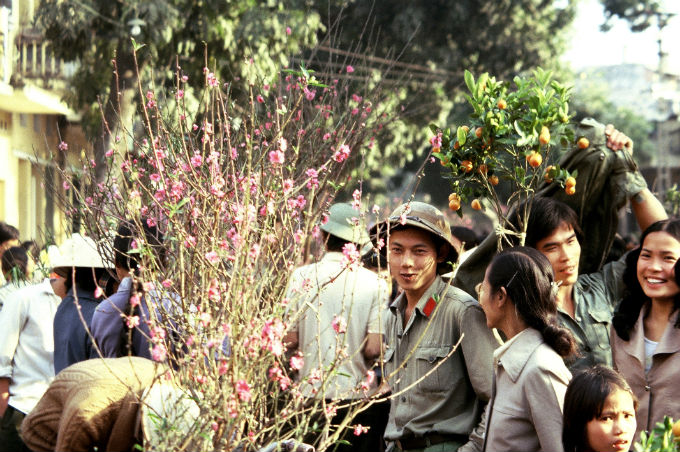

A fines de la década de 1990, el éxito de las reformas comerciales y agrícolas introducidas en Vietnam bajo el Doi Moi o Renovación de 1986 eran ya muy evidentes. Se creaban empresas constantemente, la mayor parte nacidas como sociedades por acciones con participación de trabajadores; tanto privadas como extranjeras. La economía crecía con tasas anuales superiores al 7 %. La pobreza comenzaba a reducirse y la esperanza de vida a aumentar. Desde 1991 se eliminó el monopolio estatal sobre el comercio exterior, lo que propiciaba el libre intercambio de las empresas privadas y estatales con el exterior. Se emprendió la búsqueda de nuevas fuentes de financiamiento, para lo cual se trazaron políticas que favorecieron el ahorro y la inversión tales como el desarrollo del mercado de capitales, el aumento de las tasas de interés, y el ahorro individual en divisas en los bancos comerciales. Una década después, al comenzar el siglo XXI, en 2001, el Partido Comunista de Vietnam aprobó un plan económico que abarcaría diez años en el que se consolidaba el papel del sector privado en la economía al mismo tiempo que se reafirmaba la primacía del sector estatal. Se expresaba de esta forma: “economía de mercado de orientación socialista”. La economía de Vietnam se ha expandido constantemente hasta llegar a ser hoy una de las de más rápido crecimiento en el mundo. Este “milagro” debe ser valorado teniendo muy en cuenta su punto de partida: una economía desgastada por las agresiones que sufrió el país entre 1954 y 1975. Mercado y control estatalSi bien Vietnam se encaminó hacia una economía orientada al mercado, el gobierno vietnamita controlaba en un inicio los principales sectores de la economía, como el sistema bancario, algunas empresas estatales y la gestión del comercio exterior; actividades estratégicas. La reforma vietnamita se planteó en cinco sentidos: renovación del pensamiento, de la estructura y la gestión económica, del sistema político, de la política social, y de la política exterior. Su primera etapa se enfocó en la agricultura y sector empresarial y, la segunda en el desarrollo de la economía de mercado orientada al socialismo, con la renovación de la empresa estatal, el sistema financiero, la apertura al exterior y más recientemente la reforma de la administración pública. Con respecto a la renovación del pensamiento, se hizo una profunda crítica al subjetivismo que despreció las leyes objetivas y condiciones concretas, así como se afirmó el compromiso y respeto a las exigencias de la realidad y lógica del desarrollo de la sociedad. En cuanto a la renovación de la estructura y gestión de la economía, se ha reconocido la existencia de múltiples formas de propiedad y de componentes económicos; así como se declaró necesario aplicar el modelo de economía de mercado orientado al socialismo. En la política social vietnamita colocó al ser humano en el punto de partida y destino de todas las acciones socioeconómicas; así como se ha exigido combinar orgánicamente el crecimiento económico con la puesta en marcha de la equidad y el progreso social. Para renovar el sistema político, se ha hecho énfasis en la necesidad de redefinir el papel dirigente del PCV, diferenciándolo del papel del Estado.
|
|
|  |
Sitio Creado Por Geronimo Miguel